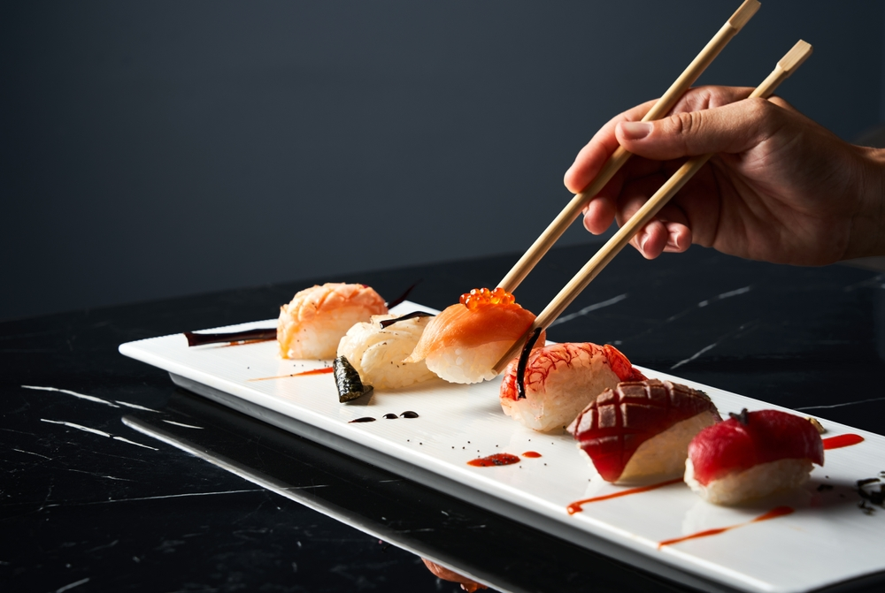
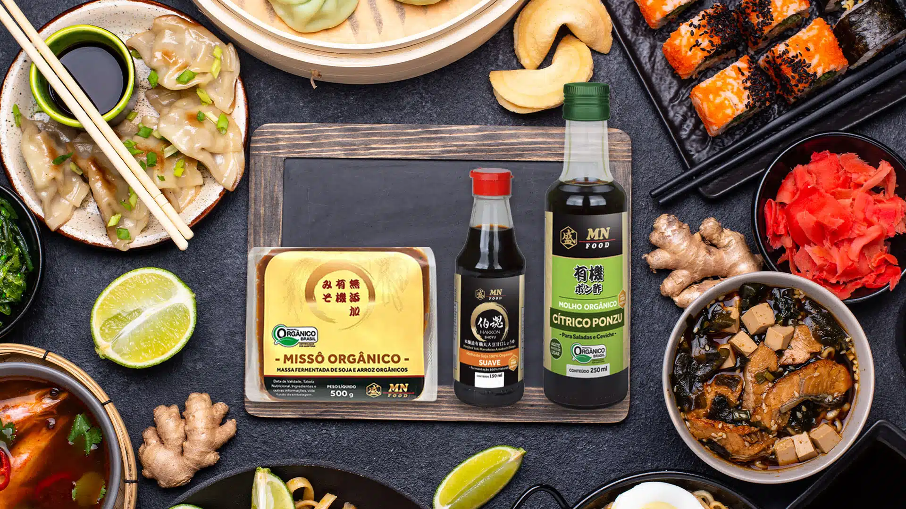

Seja bem-vindo!
Aqui você encontra as melhores receitas da culinária japonesa

O que você procura nós temos aqui!
Diversos pratos variados desde salgados até doces, vamos juntos aprender novas receitas?

Quais ingredientes são esses?
Nós explicamos tudo para você! Apenas acesse nossa página de ingredientes para ter uma noção maior dos condimentos mais utilizados na culinária do Japão! Está esperando o que? Comece já a inclementar uma nova cultura na sua cozinha!